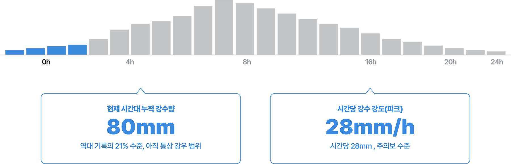
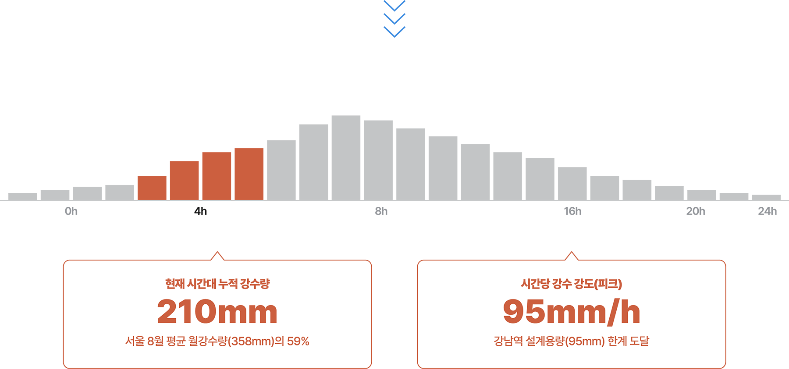
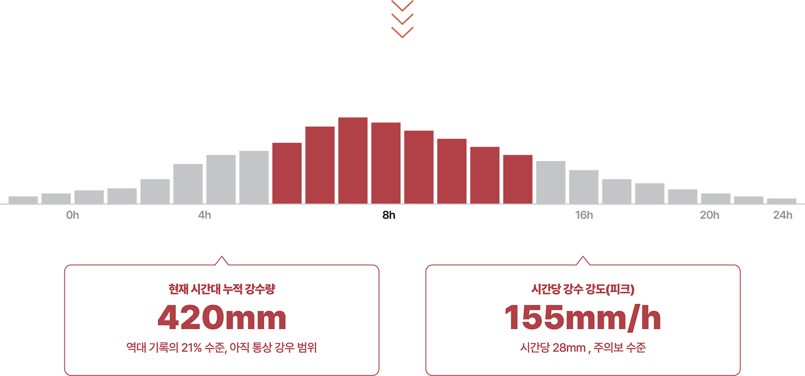
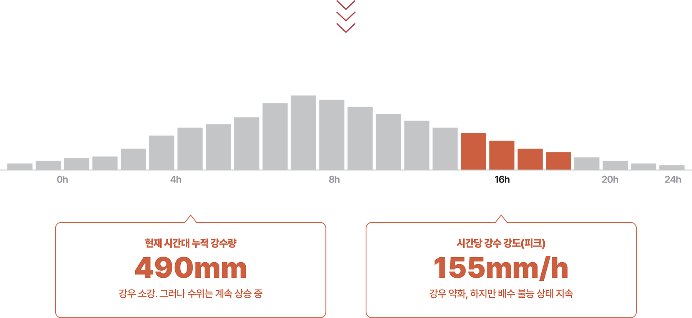

지난 2022년 8월 8일, 서울 동작구 신대방동 기상청 자동기상관측장비(AWS)에 하루 381.5mm의 강수량이 기록됐다. 이는 서울 8월 평균 월강수량(약 350mm)을 웃도는 양이 단 하루 만에 쏟아진 것과 같다. 이 기록적인 폭우는 공식 관측소 기록은 아니었지만, 기상청은 “비공식적으로 서울에서 역대 가장 강력한 폭우가 내린 날”로 인정했다. 만약 이와 비슷하거나, 이를 웃도는 수준의 극한 폭우가 내리면 어떤 일이 일어날지 ‘도시 피해 시나리오’를 써본다. 각 수치는 기상·재난 데이터를 바탕으로 AI 시뮬레이션을 통해 가상으로 재구성해 보았다.
0-4h 전조기

주요 사건 (00:00-04:00)
기상청 호우특보 발령. 24시간 200mm 이상 예보.
⚠ 서울시 재난대응반 상황실 가동. 빗물펌프장 사전 점검.
관악·동작·강남구 저지대 주민 사전 대피 권고 문자 발송.
전조 강우기. 아직 도시 인프라는 정상 범위 내에서 작동하지만, 땅은 빗물로 채워지기 시작해 물을 흡수하기 힘든 상태에 가까워지고 있다. 기록적 호우에서 첫 4시간은 ‘골든타임’이다.
4-8h 급증기

주요 사건 (04:00-08:00)
강남역 일대 침수 시작. 강남대로 차량 고립, 지하철 2호선 강남·역삼역 운행 중단.
도림천·안양천 범람 경보. 관악구·영등포구 저지대 1m 침수. 반지하 세대 고립 신고 급증.
변전소 3곳 침수로 노원·도봉·관악구 일부 정전 발생. 약 12만 가구.
우면산·아차산 산사태 경보. 서초구·광진구 산지 인접 주거지 대피명령.
시간당 강수량이 95mm를 넘어서며 강남역 일대 하수관 설계 한계(시간당 95mm)를 초과한다. 도림천, 안양천이 범람 위기에 진입하고, 반지하 주택 밀집 지역에서 고립 신고가 늘기 시작한다.
8-16h 절정기

주요 사건 (08:00-16:00)
중랑천 제방 월류. 성수·뚝섬·잠실 저지대 침수. 동부간선도로 전면 통제.
한강 홍수위 돌파. 여의도 한강공원 완전 침수.
북한산·관악산·청계산 동시다발 산사태. 인명피해 다수 발생. 소방 출동 불가 구역 다수.
광역 정전 확대. 서울 전역 40% 이상 정전. 신호등·지하철 전면 불능. 병원 비상발전 가동.
강남구 테헤란로 일대 최대 2m 침수. 지하 주차장·상가 완전 수몰. 차량 수천 대 유실.
시간당 155mm의 초극단 강우로 서울 전역이 마비된다. 한강이 범람 임계점에 도달해, 수십만 가구의 침수, 대규모 정전, 지하철 및 간선도로의 전면 마비가 동시에 일어난다. 특히 큰 하천 주변 저지대 전체를 집어삼키면서 지하 공간의 인명피해가 가장 극심한 상태다.
16-20h 감소기

주요 사건 (16:00-20:00)
강우 강도 감소 시작. 한강 수위는 최고조 지점에 도달, 서울 전역 60만+ 가구 침수.
군·소방 헬기 구조 작전. 고립 주민 구조 시작. 강남·강북 침수 주거지 집중 투입.
충주댐·소양강댐 비상 방류 지속. 한강 하류 방류량 초당 3만 톤 이상.
전력 복구 작업 시작. 강북 일부 지역 전기 공급 재개.
비는 약해졌지만 수재는 절정에 이른다. 상류 댐의 방류와 서울 전역의 지표 유출수(땅속으로 흡수되지 못하고 지표면을 따라 흘러내리는 빗물)가 한강으로 집중되면서 수위는 여전히 상승하거나 유지된다. 구조 작전이 본격화되지만 접근 가능한 경로가 극히 제한되는 상황이다.
20-24h 수습기
주요 사건 (20:00-24:00)
서울시 1차 피해 집계: 침수 주택 8만+ 동, 사망·실종 50명+, 이재민 30만+ 명 추정.
한강 수위 하강 시작. 침수 지역 서서히 빠지기 시작. 오·폐수 역류로 2차 오염 우려.
지하철 시설 피해 점검 시작. 일부 역 완전 수몰로 복구 수개월 예상.
재난사태 선포. 중앙정부 특별재난지역 지정 검토. 군 병력 1만 명 투입 결정.
강우는 멈췄지만 피해 규모가 드러나기 시작한다. 감전, 오염, 구조물 붕괴 등 2차 피해가 이어질 가능성이 높고, 서울 지하 인프라(지하철, 통신, 전력)의 완전 복구에는 수개월이 필요하다.